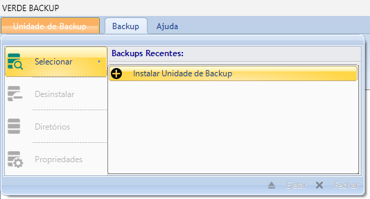
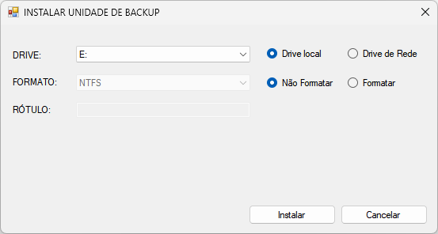
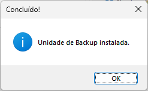
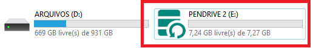
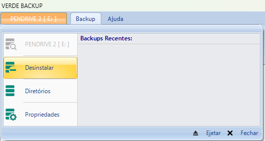
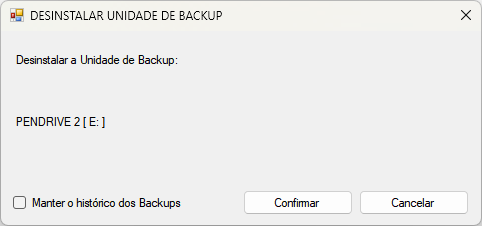
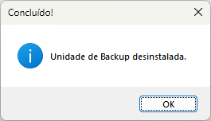

Unidade de Backup
Uma Unidade de Backup é um dispositivo externo de memória aonde será feito o backup dos arquivos locais. Ela pode ser:
HD Externo;
Pendrive;
Cartão de memória;
Disco SSD;
Drive de rede;
etc.
Para que qualquer dispositivo de memória seja reconhecido como uma Unidade de Backup, é necessário realizar a instalação do mesmo.
Instalando a Unidade de Backup
Para instalar a Unidade de Backup, conecte o dispositivo externo de memória a uma porta USB livre do computador, ou em caso de drive de rede, crie um mapeamento para o mesmo no sistema Microsoft Windows, e siga os seguintes passos:
1. Vá ao menu Unidade de Backup/Selecionar e clique em Instalar Unidade de Backup.

2. Na caixa de diálogo INSTALAR UNIDADE DE BACKUP, marque o tipo de drive a ser instalado, se Drive local ou Drive de Rede. Logo após, selecione a letra do drive na lista DRIVE.

Em caso de seleção de drive local, você tem a opção de formatar o dispositivo durante a instalação. Para formatar, marque a opção Formatar e selecione o tipo de sistema de arquivos (FAT, NTFS) na lista FORMATO. Opcionalmente, você pode definir um rótulo para a Unidade de Backup, digitando o mesmo no campo RÓTULO.
Caso não vá formatar, apenas mantenha a opção Não Formatar selecionada.
3. Clique no botão Instalar e aguarde a finalização do processo. Caso a instalação tenha ocorrido com sucesso, a seguinte mensagem será exibida:

Após a instalação, caso seja um dispositivo USB, será atribuído um ícone personalizado ao mesmo no Windows Explorer. Ejete o dispositivo e retire da porta USB, depois conecte novamente e poderá visualizá-lo:

Se você voltar ao menu Unidade de Backup/Selecionar, verá que o rótulo da Unidade de Backup recém-instalada aparecerá na lista, mostrando que o dispositivo agora é uma Unidade de Backup e está pronto para o uso.
Desinstalando a Unidade de Backup
Para desinstalar a Unidade de Backup, conecte o dispositivo externo de memória a uma porta USB livre do computador se for um dispositivo USB, ou se for um drive de rede, certifique que a interface de rede está acessível, e siga os seguintes passos:
1. Vá ao menu Unidade de Backup/Selecionar e clique no nome da Unidade de Backup que deseja que seja desinstalada.
2. O menu mudará para o contexto da Unidade de Backup selecionada. Acesse novamente o menu e clique em Desinstalar:

3. Na caixa de diálogo DESINSTALAR UNIDADE DE BACKUP, marque a opção Manter o histórico do Backups caso deseje preservar o log dos backups realizados na Unidade de Backup.

Caso deseje excluir tudo, apenas mantenha o campo desmarcado.
4. Clique no botão Confirmar. Caso a desinstalação tenha ocorrido com sucesso, a seguinte mensagem será exibida:

Os arquivos na Unidade de Backup serão preservados. Se desejar excluí-los, deverá fazê-lo manualmente, ou formatar o dispositivo de memória.